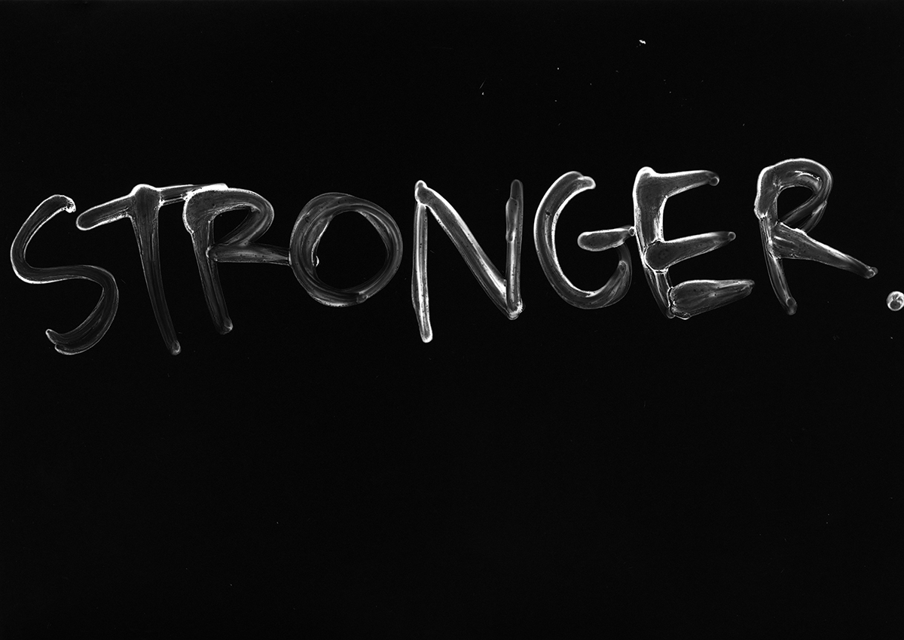

"I'm afraid of opening up...except my legs."
"When I was younger, I would beat on and make fun of my cousin despite him looking up to me because I took pleasure in it."

"My poops used to be one foot long."
"I'm afraid that I've been faking skills for too long and that one day someone will realize and I'll lose everything."
"When I was a kid, my dad always beat me up when he was drunk."

"I have never been kissed."
"I tell people I'm allergic to nuts. I basically lie to everyone because I just don't like nuts."
"I am a straight man but I kissed a guy in middle school."
"When I was little I stole a Lego from my babysitter's house just because I really liked it. I didn't tell anyone but I kept it in my drawer and couldn't even look at it because I had such a heavy conscience."
"I feel sort of responsible for my friend's suicide as I could have done much more to avoid it from happening."
"I was intentionally aiming at my cousin's head when we were playing darts at the age of 7. I almost blinded her."
"I like to play with my boobs in the shower."

"I have a sister whom is 5 years older than I am and we haven't had a cover station beyond 'hi, hello, how are you' since I was about 11."
"I had a crush on one of my teachers back in middle school."
"I had autism."
"I regret my college choice."
"I had sex with my boyfriend here yesterday."
"I only feel comfortable pooping in familiar environments (home, school etc)."
"I dropped my brother's computer, breaking the screen and never told him."
"I think of someone else other than my significant other when I masturbate."
"I wish I had a bigger penis"
"I get mad at a lot of people but I don't show it except when it really matters."
"I have anxiety. I see it as my weakness and I try to hide it from people."
"I had a thing with my sports team captain in high school when he was dating a girl."
"I changed my name once because the previous one sounded similar to the name of a famous home appliance chain."
"Instead of tampons or pads, I wear diapers when I'm on my period."
"I try not to give a shit but I always end up giving too much shit."
"I didn't help someone who fell down the steps because I didn't like him."
"There's one time I didn't shower for a month."
"My dad was kinda alcoholic. He was sort of absent from my childhood."